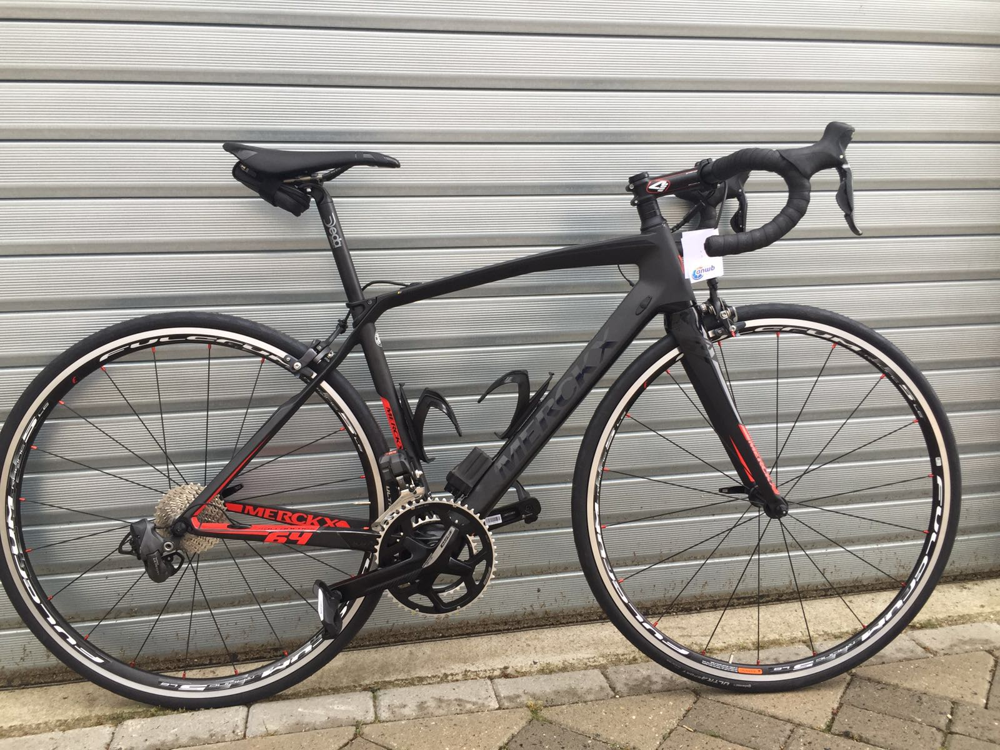

Mijn hobby
Ik ben Alex van Maaren en mijn hobby is wielrennen. 10 jaar geldeden ben ik begonnen met en oude ijzeren racefiets. Tegenwoordig staat er een carbon racefiets met DI2 (elektrisch schakelen).
Mijn zoon Jorik wilde ook graag met een wielrenfiets op pad. Het hard fietsen dat vond hij wel interessant. Jorik was 8 jaar dat hij op de club Jan van Arckel zijn eerste les kreeg. Hij vond het zo leuk, dat hij ook wedstrijden wilde gaan rijden en uiteindelijk stopte Jorik met voetballen en was wielrennen zijn sport. Hij heeft 2 seizoenen (winter) op veldrijden gezeten. Dit vond hij toch minder leuk en daarom is hij op de baan gaan fietsen in Amsterdam. De wedstrijden die hij reed, waren door heel het land. Jorik is gestart in catergorie 2 (9 jaar) met wedstrijd rijden. Ik ben met hem het hele land doorgereden voor de wedstrijden ieder weekend. En bij de nieuwelingen zijn we zelfs in Belgie wedstrijden gaan rijden. Ook heeft hij 2 meerdaagse wedstrijden gereden in Duitsland. Inmiddels is Jorik een junior, maar hij fietst op dit moment geen wedstrijden meer. We fietsen nu samen rondejes voor ons plezier. Inmiddels is de hele familie met het wielrenvirus besmet. Zowel mijn vrouw als dochter fietsen ook.
Ik volg ook graag wielrennen op tv, zeker de giro, tour de france en de vuelta en de voorjaarsklassiekers. Het mooiste moment vind ik de overwinning van Mathieu van de Poel in de Amstelgoldrace van 2019.
Zelf ben fiets ik recreatief, vaak samen met mijn zoon en af en toe alleen. Ik vind het leuk om verschillende routes te fietsen. Mocht je een leuke route hebben, dan kan je die delen via het kopje route toevoegen. Het mogen routes zijn door het hele land. Jorik en ik gaan namelijk ook wel eens een rondje fietsen in andere plaatsen.
Heb je vragen of opmerkingen, dan kan je dat kwijt bij het kopje contact.